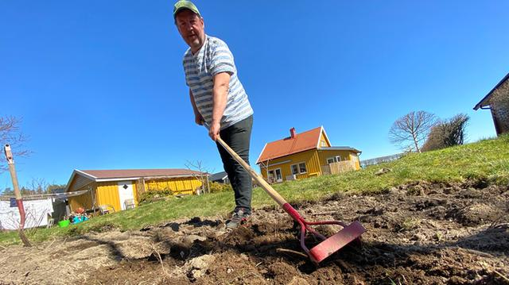
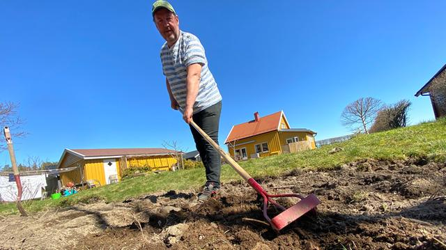

Korona gjør at flere vil dyrke selv
 

- Section A
- Section A Part 1
- Section A Part 2
Korona-viruset fikk Øyvind Woie til å ville dyrke selv.
Han lagde potetåker i plenen sin. Tomme hyller på butikken. God tid hjemme. Grenser som er stengt. Landbruket som sliter fordi arbeidere ikke får komme hit. Slik er situasjonen rundt korona-viruset i Norge. Det fikk Øyvind Woie til å handle. Han tok bort gresset på en del av hagen sin. Der skal det isteden dyrkes potet. – Behovet ble utløst av korona-krisen. Jeg vil lage maten min selv. Det er kanskje også et behov for selvberging. Jeg tenkte: kan jeg dyrke noe? Det kjennes ut som om det er på tide, sier Woie til Klar Tale. Han viste fram bilder av den nye åkeren sin på Facebook. 12 kvadratmeter der jorda er gravd opp og snudd. Samtidig ba han om råd fra andre som har gjort noe lignende. – Jeg har mye hage. Da kan jeg jo bruke en del av den til å dyrke poteter, sier han. I sosiale medier deler folk bilder fra frø og hager. De vil dyrke planter og grønnsaker selv. I USA oppfordres folk til å dyrke mat som følge av korona-krisen. Trenden kalles #victorygarden. – Veldig mange har lyst til å dyrke sin egen mat. Det gir en glede å gjøre noe slev, og se ting vokse. Veldig mange var også blitt opptatt av dette før korona-viruset, sier Tonje Waaktaar Gamst til Klar Tale. Hun er redaktør i Norsk Hagetidend. Hun sier at folk er opptatt av klima og miljøvern. Da er det bra med ting som er kortreist. Det sparer miljøet. – Særlig de unge som er glade i mat ønsker dette. De er opptatt av gode og rene råvarer. Eller helse, sier hun. Waaktaar Gamst tror tiden med korona har fått folk til å tenke. – Vi merker at flere sjekker nettsiden vår. Det er større interesse for råd om hage og dyrking. Folk merker at det mangler noe på butikken. Eller at de ikke har lyst eller kan gå dit. Det er nok også med på å øke interessen, sier hun. I Larvik har to søstre måttet trå til på familiens gartneri. Årsaken er korona-krisa. De fikk ikke arbeiderne sine til Norge. Woie mener det er naturlig nå å stille spørsmålet: Har vi nok mat? – Vi trenger landbruksarbeidere fra utlandet til produksjon av mat i Norge. Men de kommer seg ikke hit. Det er vanskelig å få grønnsaker og tomater fra Spania. Det setter i gang tanker om hvor sårbare vi er. Våre lagre med mat er avhengig av hele verden, sier Woie.
Noen er erfarne dyrkere. Andre nybegynnere. Waaktar Gamst anbefaler folk å starte med noe enkelt. – Det er veldig greit å dyrke potet.
Det har reddet Norge før. Poteter trenger ikke så mye stell når de først er i jorda, sier hun. Men hun ber folk om å kjøpe godkjente settepoteter. Det hindrer at sykdommer sprer seg. En pakke slike poteter kan for eksempel eles mellom flere venner. – De kan plantes i en egen potet-bøtte. Eller i en vaskebøtte med jord. Bare husk at du må lage huller i bunnen, sier hun. Det er mye folk ønsker å dyrke, som tomat. Men det er lettere å lykkes med andre vekster. Som for eksempel grønnkål. Den tåler frost langt utover høsten. Squash blir det fort veldig mye av. Da kan du dele med andre, foreslår hun. Ellers er reddik og salat noe som er godt framover. Løk kan lagres en god stund.
Folk har oppdaget at viktig kunnskap er i ferd med å bli borte.
De prøver å hente det fram igjen, tror Waaktar Gamst. – Folk lærer seg nye måter å dyrke på. Og gamle måter å ta vare på maten på, som å fermentere, safte og sylte. Interessen øker nå. Hele verden har på en måte fått et sjokk, sier hun. Woie er selv sønn av en bonde. Han bor i Indre Østfold. Der har han holdt på med hage lenge. Men å dyrke mat har han ikke holdt på med før. Nå er han heller ikke alene om det der han bor. – Også naboen har gravd opp plenen og laget åker, sier han.